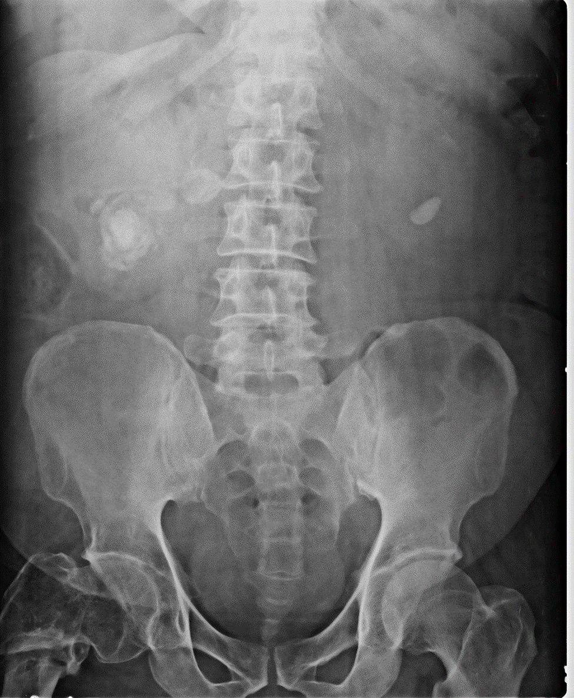
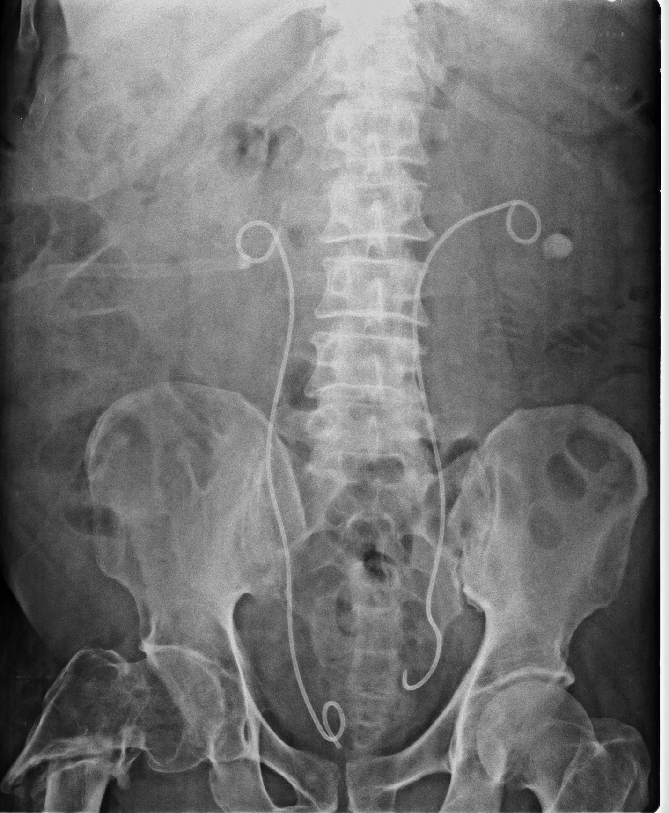
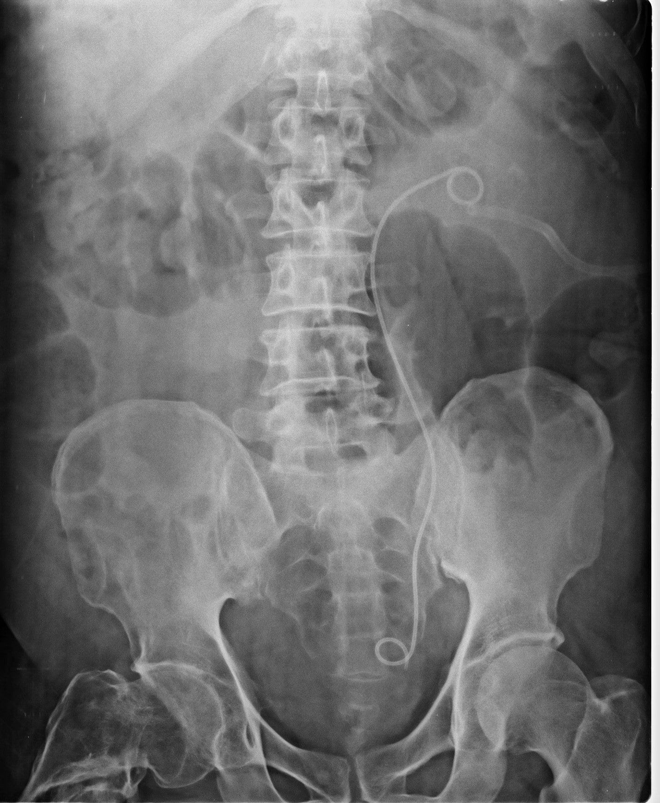

TREATMENT FOR URINARY TRACT STONE
PERCUTANEOUS LITHOTRIPSY (PCNL)
Some times the stone in the kidneys may be too large or too hard to be broken by these methods. Even if brokenwell,there may not be sufficiently adequate way out for these bits to get evacuated in the urine through the normal passage. In such patients also open surgery can be avoided by making a puncture in to the kidney through the loin and through this puncture an endoscope is passed into the kidney and the large stones can be broken in to small bits and removed. Even after this procedure patient may require a stent through the urinary tract and sometimes a small drainage tube through the loin puncture hole. This loin drainage tube is removed the next day and patient is discharged and sent home within a day or two.
- Stag Horn Renal Calculus
- Posterior Inferior CalyxPuncture
- Tract Dilatation
- Complete Clearance with DJ stent
Percutaneous NephroLithotomy (PCNL) is the preferred technique for treating Larger Kidney Stones (over 2cm in diameter) located within the Kidney. It involves Keyhole Surgery that is performed through a 1cm incision in the skin. SB Hospital was one of the earliest centers in Tamil nadu to start PCNL.
BILATERAL STAG HORN STONE
LARGE STONES IN BOTH KIDNEYS BEFORE PCNL

POST PCNL RIGHT SIDE WITH TOTAL CLEARANCE OF THE STONE ON THE RIGHT SIDE
WITH “DJ” STENT BOTH SIDES WITH LEFT SIDE STONE WAITING FOR REMOVAL

TOTAL CLEARTANCE OF STONES ON BOTH SIDES-“DJ” STENT TO BE REMOVED
